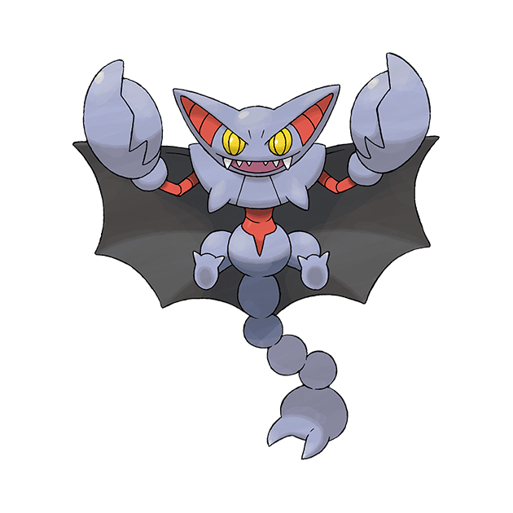

巨金怪
除了精神力量，也以怪力為傲。會用４隻腳捕捉獵物，再用鋼鐵爪子封鎖對方的行動。

天蠍王
用尾巴倒掛在樹枝上觀察獵物。會看準時機從上空偷襲。

瑪力露麗
長長的耳朵是瑪力露麗重要的感應器。只要注意聽，即使是在湍急的河流中也能分辨出獵物的種類。
沼王
就算腦袋撞上船底或河裡的岩石，也完全不會去在意，悠然自在地游泳的悠閒寶可夢。

呆呆獸
傳說當呆呆獸打呵欠時就會開始下雨，所以據說有些地區會祭祀呆呆獸。